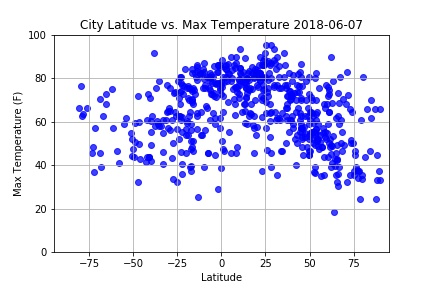

Max Temperature

As expected, the weather becomes significantly warmer as one approaches the equator (0 Deg. latitude) More interestingly, however, is the fact that the northern hempisphere tends to be warmer this time of year than the southern hemisphere. This may be due to the tilt of the earth at the time of the year this data was gathered.